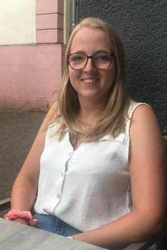

Waarom ik loop
Voor deze ziekte bestaat geen goed doel. Dus loop ik er zelf een marathon voor.
Mijn nichtje Maud heeft dunnevezelneuropathie. Ze kreeg de diagnose op haar zeventiende, na jaren van onderzoeken en onzekerheid. Het is een zeldzame aandoening van de kleine zenuwvezels die veel pijn en vermoeidheid kan geven, en waar nog geen genezing voor bestaat. Wat mij het meest raakte toen ik me erin verdiepte: er is geen goededoelenorganisatie die zich specifiek inzet voor deze ziekte.
Daarom doe ik het zelf. Op zondag 18 oktober 2026 loop ik de TCS Amsterdam Marathon. Niet voor een medaille, maar om geld op te halen voor het wetenschappelijk onderzoek dat Maud en alle andere patiënten verder kan helpen.
Wat deze actie opbrengt, gaat naar het onderzoek naar dunnevezelneuropathie bij Maastricht UMC+, het expertisecentrum voor deze aandoening in Nederland. Voor mezelf houd ik niets.


Voor wie ik loop
Voor Maud
Mijn nichtje Maud is 24 en leeft sinds haar zeventiende met dunnevezelneuropathie. Zij laat elke dag zien wat doorzetten écht betekent. Als zij dat kan, dan kan ik die 42 kilometer ook.
Samen dromen we ervan dat ik op mijn 57ste nog een onderdeel kan lopen van de Amsterdam marathon.
Maud
In haar eigen woorden
Het verhaal van Maud
Ik ben 24 jaar en leef sinds mijn 17e met de diagnose dunnevezelneuropathie. Aan die diagnose gingen meerdere jaren van onderzoeken, ziekenhuisbezoeken en onzekerheid vooraf. Toen ik uiteindelijk de diagnose te horen kreeg en dat mijn toekomst moeilijk te voorspellen is, vond ik dat erg moeilijk.
Artsen kunnen niet zeggen hoe mijn ziekte zich zal ontwikkelen. Het kan zijn dat ik op mijn dertigste nog gewoon kan lopen, dansen en werken zoals ik graag wil. Maar het kan ook zijn dat ik dan afhankelijk ben van mijn rolstoel. Die onzekerheid is voor niemand makkelijk, maar als 17-jarige student was het ontzettend moeilijk om zo'n boodschap te verwerken. Op een leeftijd waarop je juist volop bezig bent met dromen, studeren en plannen maken voor de toekomst, veranderde alles ineens.
Helaas is er op dit moment nog geen medicijn voor dunnevezelneuropathie. Dat betekent dat ik regelmatig dagen thuis moet blijven vanwege de pijn en vermoeidheid. Soms ben ik afhankelijk van mijn rolstoel en moet ik leuke uitjes met vrienden afzeggen. Dat zijn momenten die veel verdriet en frustratie met zich meebrengen. Het blijft moeilijk om telkens weer te moeten accepteren dat mijn lichaam niet altijd meewerkt en dat ik keuzes moet maken die leeftijdsgenoten vaak niet hoeven te maken.
Juist daarom betekent het ontzettend veel voor mij dat mijn oom zich inzet om geld op te halen voor meer onderzoek naar deze ziekte. Ik voel me enorm vereerd dat hij voor mij gaat hardlopen en zich op deze manier inzet voor een toekomst waarin hopelijk meer bekend wordt over dunnevezelneuropathie en er uiteindelijk een effectieve behandeling of zelfs een medicijn komt.
Samen dromen we ervan dat ik op mijn 57ste nog een onderdeel kan lopen van de Amsterdam marathon.
Ik ben nu al ongelooflijk trots op hem en ontzettend dankbaar voor zijn steun. Zijn inzet geeft mij niet alleen hoop, maar laat ook zien dat ik er niet alleen voor sta.
Maud, 24 jaar
De ziekte
Wat is dunnevezelneuropathie?
Ik schrok van twee dingen toen ik las wat deze ziekte met iemand doet: hoe zwaar het is, en hoe weinig mensen er ooit van hebben gehoord. Dit is wat je moet weten.
Dunnevezelneuropathie (DVN) is een aandoening waarbij de dunne zenuwvezels beschadigd raken. Dat zijn de fijnste eindtakjes van de zenuwen, vlak onder de huid. Ze geven pijn- en temperatuurprikkels door en regelen processen waar je zelf geen invloed op hebt, zoals de bloeddruk, het zweten en de spijsvertering.
De klachten beginnen meestal in de voeten en handen en breiden zich langzaam uit naar de benen, armen en romp. Dat komt doordat de langste zenuwen het eerst beschadigd raken.
Wat de aandoening met je doet
Pijn en gevoel
- Brandende, prikkelende of schietende pijn
- Pijn bij een normale aanraking, zoals kleding of beddengoed
- Minder goed warmte, kou of pijn kunnen voelen
- Jeuk en soms rusteloze benen
Wat het lichaam vanzelf regelt
- Droge ogen en droge mond
- Te veel of juist te weinig zweten
- Maag- en darmklachten
- Duizeligheid bij opstaan en hartkloppingen
Onzichtbaar, maar ingrijpend
De spierkracht blijft meestal normaal, maar door de pijn en de chronische vermoeidheid raakt het dagelijks leven flink beperkt. Aan de buitenkant zie je er niets van.
Het raakt alles
DVN heeft invloed op slaap, school of werk en op wat je nog kunt ondernemen. De klachten wisselen: er zijn betere en slechtere periodes.
Nog geen genezing
Er bestaat nog geen medicijn dat DVN geneest. De behandeling richt zich nu op pijnbestrijding en revalidatie. Daarom is onderzoek zo belangrijk.
Bronnen: Thuisarts.nl, DVN Expertisecentrum en Spierziekten Nederland. Deze pagina is bedoeld als algemene informatie en vervangt geen medisch advies.
Behandeling
Wat er nu wel en niet kan
Er is nog geen medicijn dat DVN geneest. Wordt er een onderliggende oorzaak gevonden, dan begint de behandeling daar. Lukt dat niet, dan blijft er pijnmedicatie over die vaak gedeeltelijk verlicht, en pijnrevalidatie om te voorkomen dat de pijn het hele dagelijks leven gaat bepalen.
Onderzoek levert echt iets op
De onderzoekers in Maastricht toonden aan dat het middel lacosamide de pijn vermindert bij patiënten met een specifieke erfelijke vorm van DVN. Bij 58% van hen nam de pijn af, tegenover 22% bij een placebo.
Gepubliceerd in Brain, 2019. Voor alle andere vormen van DVN bestaat zoiets nog niet.
De levensverwachting bij DVN is normaal en de spierkracht blijft goed. Maar de pijn en de vermoeidheid bepalen wel wat er op een dag mogelijk is. Over het beloop bij kinderen is nog opvallend weinig bekend. Precies daar kan onderzoek het verschil maken, en daarom sta ik op 18 oktober aan de start.
Waar je donatie heengaat
Naar de onderzoekers in Maastricht
In Nederland is Maastricht UMC+ het toonaangevende expertisecentrum voor dunnevezelneuropathie. De onderzoeksgroep van dr. Janneke Hoeijmakers doet daar al jaren onderzoek naar de oorzaken, diagnose en behandeling van deze aandoening. Het doel is om de ziekte eerder te herkennen, nieuwe behandelingen te ontwikkelen, het verloop van dunnevezelneuropathie beter te begrijpen en de zorg voor patiënten te verbeteren.
Studies die zich richten op nieuwe behandelingen zijn heel belangrijk, maar dat geldt ook voor onderzoek naar het beloop van dunnevezelneuropathie. Bij een dergelijke studie worden patiënten gedurende langere tijd gevolgd om beter inzicht te krijgen in de manier waarop de aandoening zich ontwikkelt. Als het beloop van dunnevezelneuropathie beter bekend is, geeft dat patiënten meer duidelijkheid en houvast. Deze informatie is ook nodig om goed te kunnen onderzoeken of een behandeling echt werkt.
Een belangrijk onderdeel hiervan is het bekijken hoe de dunne zenuwvezels in de huid veranderen in de loop van de tijd. Hiervoor wordt gebruikgemaakt van een huidbiopt: een klein hapje uit de huid waarmee kan worden gekeken hoeveel dunne zenuwvezels in de huid aanwezig zijn. We onderzoeken of het aantal zenuwvezels afneemt wanneer de klachten erger worden, en of het zinvol is om een huidbiopt later nog eens te herhalen.
Dr. J. Hoeijmakers, neuroloog Maastricht UMC+
Studies zoals deze kunnen bijdragen aan een beter begrip van dunnevezelneuropathie en mogelijk helpen om in de toekomst het effect van behandelingen beter te kunnen beoordelen. Het bewerken van een huidbiopt kost echter veel tijd en geld. Daarom wil ik met elke kilometer geld ophalen voor dit onderzoeksproject.
De opbrengst gaat naar dit onderzoek via het Universiteitsfonds Limburg. Dat fonds steunt allerlei onderzoek van de Universiteit Maastricht en heeft een eigen crowdfundingsite, UM Crowd. Daar is een aparte actiepagina voor deze actie aangemaakt, en de doneerknop hieronder brengt je daar rechtstreeks naartoe. Het fonds is een ANBI, dus je gift is fiscaal aftrekbaar.
Doe mee
Steun het onderzoek
Elke bijdrage helpt, groot of klein. Doneren gaat snel en veilig met iDEAL.
Help mee zonder te doneren
Deel deze actie
Hoe meer mensen van deze actie weten, hoe groter de opbrengst voor het onderzoek. Delen kost niets en helpt enorm.